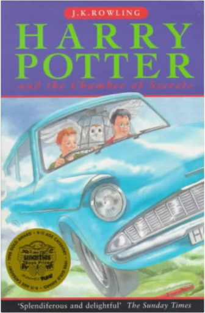

Lucky for MeFrank Robson Lucky for MeFrank Robson  At 18months of age, Lucky a cream coloured terrior was dropped off at a vet's clinic in Queensland, abandoned by his owners. Just a week from being put down, he was adopted by Frank Robson, this is a story mateship and the joys of an independent spirit.  Apricots on the NileColette Rossant Apricots on the NileColette Rossant In 1937, five-year-old Colette Rossant arrived in Cairo from Paris with her Egyptian Jewish father and beautiful French mother. When her father dies Colette's flighty mother abandons the little girl to her wealthy grandparents. She soon settles into their luxuriant, food centred lifestyle - spending afternoons in the spice filled kitchen; accompanying her grandmother to the bazaar; and feasting on the delicious Egyptian food. At fifteen Colette is brought back to Paris with her mother, never to see her grandparents again, and only to return to Egypt thirty years later. In this charming, funny, and moving memoir, accompanied by mouth watering recipes, she evokes an Egypt lost, to her and to us, forever.  Harry Potter and the Deathly HallowsRowling, J. K. Rowling Harry Potter and the Deathly HallowsRowling, J. K. Rowling Harry Potter is preparing to leave the Dursleys and Privet Drive for the last time. But the future that awaits him is full of danger, not only for him, but for anyone close to him - and Harry has already lost so much. Only by destroying Voldemort's remaining Horcruxes can Harry free himself and overcome the Dark Lord's forces of evil. In this dramatic conclusion to "The Harry Potter Series", Harry must leave his most loyal friends behind, and in a final perilous journey find the strength and the will to face his terrifying destiny: a deadly confrontation that is his alone to fight. In this thrilling climax to the phenomenally bestselling series, J.K. Rowling reveals all to her eagerly waiting readers.  Harry Potter and the Goblet of Fire No 4J. K. Rowling Harry Potter and the Goblet of Fire No 4J. K. Rowling From the back of the dust jacket: "The summer holidays are dragging on and Harry Potter can't wait for the start of the school year. It is his fourth year at Hogwarts School of Witchcraft and Wizardry, and there are spells to be learnt, potions to be brewed and Divination lessons (sigh) to be attended. Harry is expecting these: however, other quite unexpected events are already on the march ..."  Harry Potter and the Philosopher's StoneJ. K. Rowling Harry Potter and the Philosopher's StoneJ. K. Rowling Harry Potter is an ordinary boy who lives in a cupboard under the stairs at his Aunt Petunia and Uncle Vernon's house, which he thinks is normal for someone like him who's parents have been killed in a 'car crash'. He is bullied by them and his fat, spoilt cousin Dudley, and lives a very unremarkable life with only the odd hiccup (like his hair growing back overnight!) to cause him much to think about. That is until an owl turns up with a letter addressed to Harry and all hell breaks loose! He is literally rescued by a world where nothing is as it seems and magic lessons are the order of the day. Read and find out how Harry discovers his true heritage at Hogwarts School of Wizardry and Witchcraft, the reason behind his parents mysterious death, who is out to kill him, and how he uncovers the most amazing secret of all time, the fabled Philosopher's Stone! All this and muggles too. Now, what are they? Harry Potter and the Chamber Of SecretsJ.K.; Michelle Radford (Cover Art) Rowling Traces d'usages, qq peu défraichi mais sinon bel ouvrage.Expédition rapide de votre commande avec protection soignée de vos articles.Professionnel de la vente à distance.Professional on e-business.Fast delivery of your order.Item very well packed(réf 21g )  Kabale Und LiebeFriedrich Schiller Kabale Und LiebeFriedrich Schiller Intrigue and Love (sometimes Love and Intrigue, Love and Politics or Luise Miller), (German, Kabale und Liebe, literally Cabals and Love), is a five-act play, written by the German dramatist and writer Friedrich Schiller. It was his third play and shows how cabals and their intrigue destroy the love between Ferdinand von Walter, a nobleman's son, and Luise Miller, daughter of a middle-class musician. |


 Made with Delicious Library
Made with Delicious LibrarySpringfield, State zipflap congrotus delicious library Doddridge, Edward